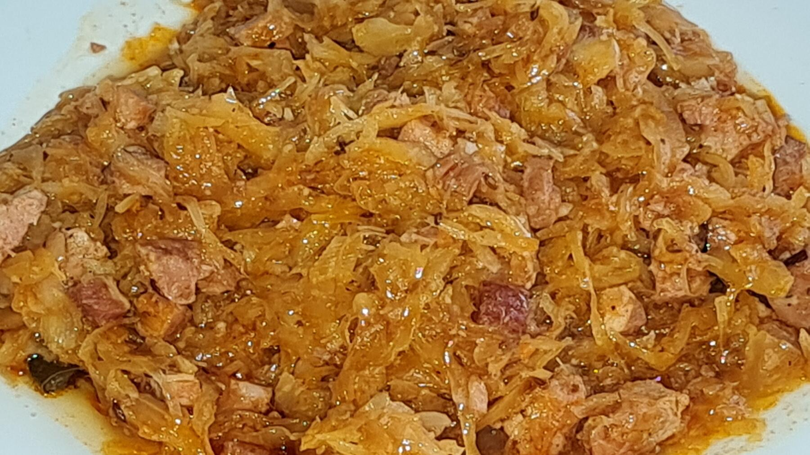

Zurück zur Übersicht
Bigos
Polnischer Krauteintopf mit Sauer- und Weißkraut, Gulasch, Räucherspeck, Wurst und Waldpilzen, der langsam einkocht.
- Zeit
- 2 Std.
- Schwierigkeit
- mittel
- Kategorie
- Klassiker
- Ernährung
- mit Fleisch
Zutaten
Portionen
- 500 gSauerkraut
- 500 gWeißkraut
- 500 gGemischtes Gulasch
- 200 gMagerer Räucherspeck
- 300 gGeräucherte Wurst
- 1Zwiebel
- 50 gGetrocknete Waldpilze (oder 200–300 g Champignons)
- 1Lorbeerblatt
- 5Pimentkörner
- Tomatenmark
- Pfeffer, eventuell Salz
Zubereitung
- Am Vortag die Pilze zerkleinern und einweichen.
- Sauerkraut mit den Pilzen weich kochen. Weißkraut schneiden und separat kochen.
- Gulaschfleisch und Zwiebel in Würfel schneiden und braten.
- Speck würfeln, auslassen, zum Sauerkraut geben und mitkochen.
- Das weiche Gulaschfleisch und danach das Weißkraut dazugeben.
- Die Wurst in Halbscheiben schneiden und mit Lorbeerblatt, Piment, Pfeffer und Tomatenmark zugeben.
- Alles zusammen langsam kochen, bis fast das ganze Wasser verdampft ist. Nach Geschmack eventuell salzen.
Hinweis: Die 2 Stunden sind ein Richtwert aus vergleichbaren Bigos-Rezepten, ohne das Einweichen der Pilze am Vortag.